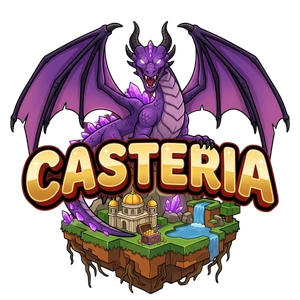

Plante des champs
Dès que tu peux, cultive. À la caisse, /tickets échange tes récoltes contre des tickets. Plus tu plantes, plus tu joues.

CasteriaTu viens d'arriver ? Le jeu te prend par la main : dix étapes, une à la fois, avec une récompense à chacune. Les voici, puis ce qu'il faut savoir pour bien lancer ton île.
Elles s'affichent en haut de ton écran, dans la carte « Premiers pas ». Tu ne peux pas te perdre.
Il t'accueille au palais, te confie un Cochon volant et te fait visiter. Pour revoir la visite : /visite.
Une commande à retenir, tu t'en serviras tout le temps : /ile.
C'est le bloc au centre de ta zone de départ. Clic droit dessus : c'est le cœur de ton île.
+100 jetonsTu en as deux dans ton sac en arrivant. Une machine posée produit toute seule, même quand tu fais autre chose.
+500 jetonsClic droit sur une machine, ou d'un coup pour toutes depuis ton Noyau.
+200 jetonsTape /sell all : tout ce qui se vend part au marché, et les jetons tombent.
Ta deuxième machine. Regarde ce qui existe dans /catalogue ; un troisième Casse-cailloux t'aidera à y arriver.
Trois missions par jour dans /missions. Chacune donne des tickets, pour la roue.
Presque tout ce que tu fais rapporte de l'expérience. Chaque niveau débloque quelque chose.
+1 Clé de VoteTon premier boss, dans son arène : /boss. Si tu tombes, tu ne perds rien. Réessaie !
Les jetons font tourner ton île. Les tickets, eux, t'ouvrent la roue, et la roue donne des objets introuvables ailleurs. Voilà comment en avoir.
Dès que tu peux, cultive. À la caisse, /tickets échange tes récoltes contre des tickets. Plus tu plantes, plus tu joues.
Trois par jour : la facile donne 1 ticket, la moyenne 2, la difficile 4. Elles changent à minuit. Plusieurs jours de suite : des tickets en prime.
Un ticket, un tour, avec /roue. Tu mises un objet pour en gagner un plus précieux, ou tu perds ta mise. Plus tu vises haut, plus c'est dur.
Ce qu'on aurait aimé savoir le premier jour.
Ici, pas de mine commune ni de ferme partagée. Tes machines, tes champs, tes bêtes : tout est chez toi.
Une machine de plus rapporte toute la journée. Au début, chaque jeton placé dans une machine t'en ramène d'autres.
Tape /aide : chaque sujet y est expliqué en quelques lignes. Et Ludovic, le chroniqueur, te donne des quêtes : /qp.
Le marché achète tes récoltes, mais l'hôtel des ventes (/hdv) te laisse fixer ton prix entre joueurs.
Invite-les sur ton île avec /amis, et choisis ce qu'ils ont le droit d'y faire.
Quand ton île tourne, la mer t'attend : ton premier navire s'achète à la Borne, sur le quai, à l'est du palais. Tout sur la mer et les pirates.